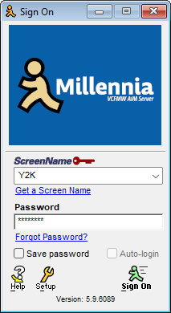
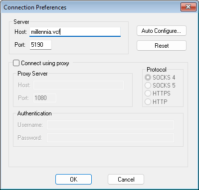
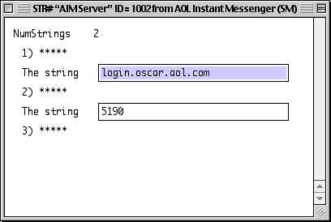
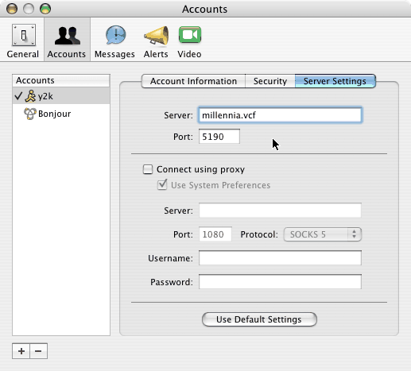
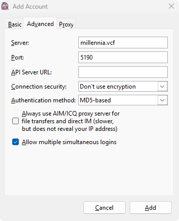

Millennia is an AOL Instant Messenger service, locally hosted at VCF Midwest 21. The very same AIM you remember, running live right on the show floor. Fire up your favorite client on that beige box you dragged from home, sign on, and chat with folks across the show floor. Not at VCFMW? Connect via Compu-Global-Hyper-Mega-Net to join the fun!
No account and no registration necessary. Just pick a screen name, type any password, and you're chatting like it's the new millennium.
Running a machine that an AIM client doesn't exist for? Don't worry, we've got you covered. Check out TelAIM - a brand new VT100-compliant telnet AIM client!

You need an AIM client that speaks the classic OSCAR protocol. Here are some recommended versions that match your machine:
- For Windows 95 / 98 / ME / 2000 / XP, use AIM 4.x - 5.x. These are the last versions of AIM with the classic look & feel.
- For 68K/PPC Macs (System 7 / OS 8 / OS 9), use AIM 2.0 (68K Native) or AIM 4.7 (PPC Native). (Heads up: on Classic Mac AIM clients, you can't change the server URL easily - see Change Your Server.)
- For PowerPC Macs (OS X 10.0 & 10.1), use AIM 4.7 (10.0 / 10.1), or iChat (10.2+). (Heads up: on AIM 4.7, you can't change the server URL easily - see Change Your Server.)
- For PowerPC/Intel Macs (OS X 10.2+), no download is needed! Use the built-in iChat app.
- For modern machines (Windows 7+, Linux or macOS) use Pidgin plus the retro-prpl libaim plugin.
AIM 6, 7, and Adium are currently not supported, due to hard Kerberos/BUCP authentication requirements.
- Windows: double-click the installer and click through it. Optionally decline any AOL toolbar/ISP offers if you encounter them.
- Classic Mac: un-stuff the .hqx / .sit archive with StuffIt Expander and run the extracted installer.
- Mac OS X 10.2+: nothing to install, iChat is already in your Applications folder.
- Pidgin: install Pidgin, then drop the libaim plugin from retro-prpl into Pidgin's plugins folder and restart Pidgin. Without it, AIM won't appear in the protocol list.
Launch the program. You should land on a Sign On window like the one pictured above.
In the Screen Name box, type any name you like. In the Password box, type any password. It just can't be blank. For Pidgin, use the Manage Accounts dialog to add an account. Millennia runs with open sign-on for the show, so the password isn't checked, but your client won't let you sign on with an empty one.
| Screen Name | CommodoreKid (anything you want) |
| Password | vcfmw (anything, just not empty) |
If you're on the show floor: you almost certainly don't need to change anything. Just click Sign On. The show's DNS makes your client's default address (login.oscar.aol.com) resolve to Millennia automatically.
If it won't connect, or you're joining over CGHMN, you'll set the server address by hand.
The moment you sign on, you will receive an IM from our chat bot, Millennia. Your client may first pop up a confirmation box asking whether to accept messages from Millennia. Click Accept.
Millennia will greet you with the house rules and a link to the main chatroom. Follow that link to jump straight into the conversation and start chatting with everyone else on the server.
Millennia answers on three names. Use the row that matches where you are. Pay special attention to the port, as it is different for CGHMN.
| Where are you? | Host / Server | Port | Notes |
|---|---|---|---|
| Show floor DEFAULT | login.oscar.aol.com | 5190 | The address your client already ships with. The show network answers for it, so no changes are needed - just Sign On. |
| Show floor ALTERNATIVE | millennia.vcf | 5190 | The show's own DNS name for Millennia. Use this if you'd rather point at it explicitly, or if the default above ever gives you trouble. |
| Show floor EMERGENCY | 172.24.8.2 | 5190 | Direct IP in case of emergencies. If all else fails, try this one. |
| Off-site via CGHMN | millennia.retro | 5191 | For members connecting across Compu-Global-Hyper-Mega-Net. You must be on the CGHMN network for this name to resolve. |
Every AIM client hides the server setting in a slightly different location. Find your client below and follow along. In every case you're looking for two things: a Host (or "Server") box and a Port box.
> AIM 4.x / 5.x for Windows
- On the Sign On window, click the Setup button.
- Click the Sign On/Off category on the left, then click Connection. (Early 4.x builds, just click the Connection tab on top.)
- In the Host box, type your address & set the Port to match the Server Addresses table.
- Make sure "Connect using proxy" is unchecked.
- Click OK, then Sign On.

> AIM 2.0 - 4.7 on 68K / PPC Macs (System 7.1 / OS 8 / OS 9)
Classic Mac AIM clients have no setting for changing the connection server from inside the program. You have two choices:
- Recommended: just leave it on the default login.oscar.aol.com and Sign On. On the show LAN that name already resolves to Millennia, so it simply works - no editing required.
- Advanced: If you need to point elsewhere (if connecting over CGHMN for example): use ResEdit to open the AIM application, scroll down and double-click on STR#, and under AIM Server, edit the stored server string, replacing login.oscar.aol.com with an address from the Server Addresses table. Make sure to save your changes. This is a slightly advanced, at-your-own-risk edit. It's best to work on a copy of the app in case you mess something up.

> iChat (Mac OS X 10.2+)
- Open iChat > Preferences > Accounts and click + to add an account.
- Set Account Type to AIM, enter your screen name and a password (any non-blank password), and add the account.
- Select the new account, open Server Settings, and set the Server and Port to match the Server Addresses table. Make sure "Connect using proxy" is unchecked.

> Pidgin (modern Windows / Linux / macOS)
- First install the retro-prpl libaim plugin (see Step 2 of Getting Connected). Without it, AIM won't appear as a protocol.
- Open Accounts - Manage Accounts - Add.
- Set Protocol to AIM.
- Username: your screen name. Password: any non-blank password (tick "Remember password" so you don't have to enter your password every time).
- Click the Advanced tab. Set Server to your address and Port to match (see table). Set Connection security to "Don't use encryption", and set Authentication method to "MD5-based". Encryption & secure authentication methods are not supported at this time.
- Click Add. Pidgin will automatically sign you on, and your buddy list should appear.

placeholder until I finish the client
Millennia is open to the whole show and to all members of CGHMN. Follow these rules so it stays fun for everybody:
- Keep it family-friendly. This is a public exhibit with kids around. G-rated language and topics only.
- No impersonation. Passwords aren't checked, so anyone can take any name - please don't pretend to be another guest, an exhibitor, or staff. Reserved staff names (SysOp, Admin, Millennia, Y2K) are off-limits.
- Be excellent to each other. No harassment, no spam, no flooding.
- Chats are shown in public by numerous exhibitors. Don't type anything you wouldn't want seen on multiple public screens.
- Have fun! Start a warn war with a friend, build up a mile long buddy list, or be the social butterfly you were always meant to be.
| Symptom | Resolution |
|---|---|
| "Unable to sign on" / connection times out | Double-check the Host spelling and that proxy is off. On the show floor, try the plain default login.oscar.aol.com. |
| "millennia.retro" won't resolve | You're not on the CGHMN overlay, or your DNS isn't pointed at the CGHMN resolver. You can follow the connection instructions over at CursedSilicon's Wiki. On the show floor use millennia.vcf instead. |
| "millennia.vcf" or "login.oscar.aol.com" won't resolve |
You're not connected to the show's IP network, or your DNS settings are incorrect. You must have signed your booth up for ShadyTel's services,
including a T1, DSL, or POTS (dial-up) drop. If you did not, you can try connecting via Wi-Fi, but results may vary. Last resort, try 172.24.8.2 as your connection URL in your AIM client (Port 5190). If this does not allow you to connect, please seek help at the Millennia booth. |
| Can't click on "Sign-On" - it's grayed out | Your client needs a non-blank password. Type anything (it isn't checked) and try again. You may have to type a few characters depending on the client. |
Everything else: find the Millennia booth at the show. Y2K can be reached via email (y2k.x038@gmail.com), or via Discord on the CursedSilicon and Open OSCAR Server communities if you need remote assistance.